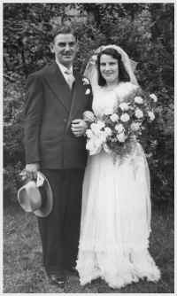
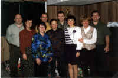
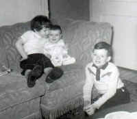
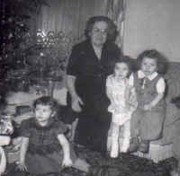
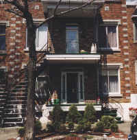
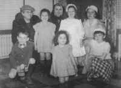

|
LA
DESCENDANCE DE
MARIE-ANNA ET ROSARIO
|

La famille de Rosario et de Marie-Anna, hiver
1926
(Marie-Anna est enceinte de Jean-Noël)
|

Les quatre fils de Rosario et Marie-Anna
Jean-Noël, Rosaire,
Gérard, Benoît
|
22 avril
1918. Lundi matin, 6 heures, au 1121 Saint-Antoine, naissance de
Marie Thérèse Marguerite Rosianne , première née de Rosario
Charette et Marie-Anna Caron. Son parrain et sa marraine sont
Alphonse Charette sr et Rosianne Miron, ses arrière-grands-parents
paternels. La porteuse est "Mde Z. Laframboise, grand-mère",
soit Alphonsine. Elle est baptisée par l'abbé Paiement, à l'église Saint-Henri.
(référence:
un petit carnet où Marie-Anna notait les naissances)
15
décembre 1919. Dimanche vers minuit, au 444 Sainte-Émélie, Rosario et Marie-Anna ont leur
premier fils, Joseph Léo Fernand Benoît. Son parrain et sa marraine
sont Zénon Laframboise et Alphonsine Gagnon, ses grands-parents maternels. La
porteuse est Mme S. Bédard, grand tante maternelle. Il est baptisé par l'abbé
Potvin, vicaire à l'église Saint-Zotique. (référence:
un petit carnet où Marie-Anna notait les naissances)
19 octobre 1921. Mercredi, vers 3 heures après minuit, au 444
Sainte-Émélie, naissance de Joseph Jean Paul Gérard. Son parrain et
sa marraine sont Jean Caron et Nellie Villemaire, son oncle et sa
tante. La porteuse est "Mde Z. Laframboise, grand-mère",
soit Alphonsine. Il est baptisé par l'abbé Potvin, à l'église Saint-Zotique.
(référence:
un petit carnet où Marie-Anna notait les naissances)
28 juin 1923. Jeudi, à 9 heures du soir, au 284
Saint-Philippe, naissance de
Joseph Armand Rosario Alphonse. En fait il portera le nom de Rosaire. Son parrain et sa
marraine sont Aldéric Lavoie et son épouse Rose-Anna Charette, son grand oncle et sa grande
tante. La porteuse est "Mme Lavoie arrière-grand-mère", soit
Anastasie Lortie-Lavoie, l'arrière-grand-mère maternelle de Rosario. Il est baptisé
à l'église de Saint-Henri. (référence: un petit
carnet où Marie-Anna notait les naissances)
26
juillet 1926. Lundi, 5 heures et demi du matin, au 266 Saint-Philippe,
naissance de Joseph Jean-Noël. Son parrain et sa marraine sont Joseph et Clara
Alexander (née Caron), son grand oncle et sa grande tante maternels. La porteuse est Garde
Viau. Il est baptisé à l'église Saint-Henri. (référence:
un petit carnet où Marie-Anna notait les naissances)
À chaque naissance
Rosario donne un cadeau à Marie-Anna. Pour celle de Jean-Noël elle
reçoit une horloge grand-père.
26 mars 1931. Marie-Anna accouche d'un "enfant mort
née", donc, d'une
fille. (référence: un petit carnet où Marie-Anna notait les naissances)
3 octobre 1935. Jeudi dans la nuit, à l'hôpital Ste-Jeanne d'Arc, naissance de
Marie-Anna Françoise Ghislaine. Son parrain et sa marraine sont Benoît et Thérèse
Charette, son frère et sa sœur. La porteuse est Mme J.Caron,
soit sa tante Nellie, épouse de Jean Caron. Elle est baptisée par
l'abbé Potvin à l'hôpital Sainte-Jeanne-d'Arc. (référence:
un petit carnet où Marie-Anna notait les naissances)
LE MARIAGE DES
ENFANTS DE
MARIE-ANNA ET ROSARIO
De 1941 à 1948 Marie-Anna
marie tous ses enfants sauf sa cadette Ghislaine qui est pensionnaire
durant l'année scolaire et qui choisira la vie religieuse au début des
années 1950.
|

Thérèse
épouse Gérard Cantin le 9 octobre 1941.

Rue St-Gérard, la famille Charette
|

Benoît
épouse Cécile Deneault le 31 mai 1945. Il vit avec ses
beaux-parents, d'abord à Verdun. Cécile a un magasin de
chapeaux rue Ste-Catherine et Benoît est mécanicien dans
un garage. Puis ils déménagent à Saint-Luc, comté Saint-Jean. Il y fait
construire un garage et deux logements à louer au-dessus.
|
|

Rosaire épouse
Rachel Philippe le 15 septembre 1945. Le père de Rachel
était comptable au garage de Rosario, et sa mère est une
des amies de Marie-Anna. Rosaire travaille dans
l'imprimerie. Ils vivent la majeure partie de leur vie à
Laval, Sainte-Dorothée.
|

Gérard épouse
Jacqueline Consigny le 29 juin 1946. Il est démobilisé et
de retour d'Europe depuis peu. Le couple
s'installe chez la mère de Jacqueline. Gérard
fait du taxi, puis travaille pour les Postes, puis la
Ville de Montréal, tout en faisant d'autres petits
boulots.
Après un séjour de 10 ans à Saint-Luc, ils reviennent à
Montréal en 1967.
|
|

Jean-Noël épouse
Florence O'Brien le 17 avril 1948. Ils passent la majeure
partie de leur vie à Pont-Viau, Laval.
La mère de Florence habite avec eux de très nombreuses
années.
|

Ghislaine entre dans la
communauté religieuse de la Présentation de Marie et
prononce ses vœux le 2 février 1956.
|
|
|
MARIE-ANNA
GRAND-MÈRE
Dès 1946 Marie-Anna
devient grand-mère. Elle a vingt-un petits-enfants.
Benoît
a trois filles, Diane, Paule, Carole.
|

Gérard a
neuf enfants,
Nicole, André, Christiane, Francine, Lucie, Céline,
Martin, Denis, François. |
Rosaire
a six enfants, Richard, Daniel, Raynald, Christine, Jocelyn,
Ghyslyne.
|
 Jean-Noël
a trois enfants, Michel, Linda, Jean.
Michel décède accidentellement à Vancouver en 1970.
Jean-Noël et Florence adoptent un enfant handicapé
placé en famille d'accueil chez-eux, Normand Bériault.
Cet enfant décède en 1978.
|
|
GALERIE DE PHOTOS |
|

Noël 1947 Marie-Anna,
Richard (fils de Rosaire), Ghislaine
|

Noël 1948
Au premier plan, de
gauche à droite, Benoît, sa fille Diane, Richard, le
fils aîné de Rosaire.
Autour de la table, de gauche à droite, Cécile, Gérard
Cantin, Ghislaine, Marie-Anna, Gérard tenant Nicole,
Jacqueline, Rachel, Rosaire, Florence.
|

Famille Noël
1948
|
|

Noël 1950
Diane, Marie-Anna,
Nicole, Richard (?)
|

Le 7965
St-Gérard, photo prise par Ghislaine en 2003
|

Rosaire le 21
avril 1944 posant devant le "Libérateur E.W.
..." avant le départ pour les Indes.
|
|

Michel, Linda et Marie-Anna en 1953
|

Marie-Anna et
Nicole rendant visite à sa fille Ghislaine au
pensionnat

Marie-Anna, Francine, Ghislaine, Christiane,
Jacqueline
André, Lucie, Nicole
|

Marie-Anna, Gérard
Cantin, Florence, Thérèse et Linda
|
| LES
ARRIÈRE-PETITS-ENFANTS DE MARIE-ANNA |
|

Martin, petit-fils de Jean-Noël
|

Les petits-enfants de Gérard
|

Les petits-enfants de Rosaire, et
Ghislaine
|

|
|
|